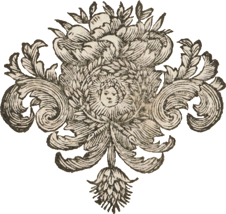

De särskilda samlingarna vid Göteborgs universitetsbibliotek (Humanisten) gömmer spännande textskatter. När vi besökte biblioteket i mars 2026 letade vi efter så kallade tillfällesdikter, en genre som i Sverige hade sin storhetstid på 1600- och 1700-talen.
Tillfällesdikter är skrivna för begravningar, bröllop och särskilda högtidsstunder. Tryckta upplagor var aldrig särskilt stora, och bevarade alster finns spridda - ofta okatalogiserade - på olika bibliotek och arkiv i landet. Vi sökte igenom några arkivboxar med tryckta tillfällesdikter på stora pappersark, varav vi valde att presentera fyra begravningsdikter från sent 1600-tal som från olika perspektiv behandlar kvinnor eller flickor. Dikterna vittnar om tidens syn på döden, de efterlevandes sorg, den allt genomsyrande religiositeten, och inte minst den stora dödligheten bland barn, ungdomar och kvinnor i barnsäng.
Digitaliseringen av verken är en del av kursen "Digitalisering för bevarande och tillgänglighet" vårterminen 2026 vid Högskolan i Borås, i samarbete med Göteborgs universitet. Verken innefattas inte av någon upphovsrätt utan är fullständigt tillgängliga.
Johanna, Cecilia & Clara